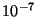
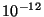
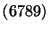
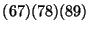
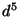
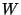
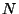
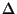

The NWChem self-consistent field (SCF) module computes closed-shell restricted Hartree-Fock (RHF) wavefunctions, restricted high-spin open-shell Hartree-Fock (ROHF) wavefunctions, and spin-unrestricted Hartree-Fock (UHF) wavefunctions.
The SCF directive provides input to the SCF module and is a
compound directive that encloses additional directives specific to the
SCF module:
SCF
...
END
A spin-restricted, closed shell RHF calculation is performed by
default. An error results if the number of electrons is inconsistent
with this assumption. The number of electrons is inferred from the
total charge on the system and the sum of the effective nuclear
charges of all centers (atoms and dummy atoms, Section
6). The total charge on the system is zero by default,
unless specified at some value by input on the CHARGE directive
(Section 5).
The options available to define the SCF wavefunction and multiplicity are as follows:
SINGLET DOUBLET TRIPLET QUARTET QUINTET SEXTET SEPTET OCTET NOPEN <integer nopen default 0> RHF ROHF UHF
The optional keywords SINGLET, DOUBLET, ...,
OCTET and NOPEN allow the user to specify the number of
singly occupied orbitals for a particular calculation. SINGLET
is the default, and specifies a closed shell; DOUBLET specifies
one singly occupied orbital; TRIPLET specifies two singly
occupied orbitals; and so forth. If there are more than seven singly
occupied orbitals, the keyword NOPEN must be used, with the
integer nopen defining the number of singly occupied
orbitals (sometimes referred to as open shells).
If the multiplicity is any value other than SINGLET, the
default calculation will be a spin-restricted, high-spin, open-shell
SCF calculation (keyword ROHF). The open-shell orbitals must be the
highest occupied orbitals. If necessary, any starting vectors may be
rearranged through the use of the SWAP keyword on the
VECTORS directive (see Section 10.5) to accomplish
this.
A spin-unrestricted solution can also be performed by specifying the
keyword UHF. In UHF calculations, it is assumed that the
number of singly occupied orbitals corresponds to the difference
between the number of alpha-spin and beta-spin orbitals. For example,
a UHF calculation with 2 more alpha-spin orbitals than beta-spin
orbitals can be obtained by specifying
scf
triplet ; uhf # (Note: two logical lines of input)
...
end
The user should be aware that, by default, molecular orbitals are
symmetry adapted in NWChem. This may not be desirable for fully
unrestricted wavefunctions. In such cases, the user has the option of
defeating the defaults by specifying the keywords ADAPT OFF
(see Section 10.3) and SYM OFF (see Section
10.2).
The keywords RHF and ROHF are provided in the code for
completeness. It may be necessary to specify these in order to modify
the behavior of a previous calculation (see Section 3.2
for restart behavior).
SYM <string (ON||OFF) default ON>
This directive enables/disables the use of symmetry to speed up Fock matrix construction (via the petite-list or skeleton algorithm) in the SCF, if symmetry was used in the specification of the geometry. Symmetry adaptation of the molecular orbitals is not affected by this option. The default is to use symmetry if it is specified in the geometry directive (Section 6).
For example, to disable use of symmetry in Fock matrix construction:
sym off
ADAPT <string (ON||OFF) default ON>
The default in the SCF module calculation is to force symmetry adaption of the molecular orbitals. This does not affect the speed of the calculation, but without explicit adaption the resulting orbitals may be symmetry contaminated for some problems. This is especially likely if the calculation is started using orbitals from a distorted geometry.
The underlying assumption in the use of symmetry in Fock matrix
construction is that the density is totally symmetric. If the orbitals
are symmetry contaminated, this assumption may not be valid -- which
could result in incorrect energies and poor convergence of the
calculation. It is thus advisable when specifying ADAPT OFF to
also specify SYM OFF (Section 10.2).
TOL2E <real tol2e default min(10e-7 , 0.01*$thresh$)>
The variable tol2e is used in determining the integral
screening threshold for the evaluation of the energy and related
Fock-like matrices. The Schwarz inequality is used to screen the
product of integrals and density matrices in a manner that results in
an accuracy in the energy and Fock matrices that approximates the
value specified for tol2e.
It is generally not necessary to set this parameter directly. Specify
instead the required precision in the wavefunction, using the
THRESH directive (Section 10.7). The default
threshold is the minimum of  and 0.01 times the requested
convergence threshold for the SCF calculation (Section
10.7).
The input to specify the threshold explicitly within the SCF
directive is, for example:
tol2e 1e-9
For very diffuse basis sets, or for high-accuracy calculations it might be necessary to set this parameter. A value of  is sufficient for nearly all such purposes.
VECTORS [[input] (<string input_movecs default atomic>) || \
(project <string basisname> <string filename>) || \
(fragment <string file1> [<string file2> ...])] \
[swap [alpha||beta] <integer vec1 vec2> ...] \
[reorder <integer atom1 atom2> ...] \
[output <string output_filename default input_movecs>] \
[lock]
[rotate <string input_geometry> <string input_movecs>]
The VECTORS directive allows the user to specify the source and
destination of the molecular orbital vectors. In a startup
calculation (see Section 5.1), the default source for
guess vectors is a diagonalized Fock matrix constructed from a
superposition of the atomic density matrices for the particular
problem. This is usually a very good guess. For a restarted
calculation, the default is to use the previous MO vectors.
The optional keyword INPUT allows the user to specify the
source of the input molecular orbital vectors as any of the following:
ATOMIC -- eigenvectors of a Fock-like matrix formed from
a superposition of the atomic densities (the default guess). See
Sections 10.5.2 and 10.6.
HCORE -- eigenvectors of the bare-nucleus Hamiltonian or
the one-electron Hamiltonian.
filename -- the name of a file containing the MO vectors
from a previous calculation. Note that unless the path is fully
qualified, or begins with a dot (``.''), then it is assumed to
reside in the directory for permanent files (see Section
5.2).
PROJECT basisname filename -- projects the existing MO
vectors in the file filename from the smaller basis with name
basisname into the current basis. The definition of the
basis basisname must be available in the current database,
and the basis must be smaller than the current basis. In addition,
the geometry used for the previous calculations must have the atoms
in the same order and in the same orientation as the current
geometry.
FRAGMENT file1 ... -- assembles starting MO vectors from
previously performed calculations on fragments of the system and is
described in more detail in Section 10.5.1. Even
though there are some significant restrictions in the use of the
initial implementation of this method (see Section
10.5.1), this is the most powerful initial guess option
within the code. It is particularly indispensable for open shell
metallic systems.
ROTATE input_geometry input_movecs -- rotates
MO vectors generated at a previous geometry
to the current active geometry.
The molecular orbitals are saved every iteration if more than 600 seconds have elapsed, and also at the end of the calculation. At completion (converged or not), the SCF module always canonically transforms the molecular orbitals by separately diagonalizing the closed-closed, open-open, and virtual-virtual blocks of the Fock matrix.
The name of the file used to store the MO vectors is determined as follows:
OUTPUT keyword was specified on the VECTORS
directive, then the filename that follows this keyword is used, or
".movecs" with
the file prefix, i.e., "<file_prefix>.movecs".
Applications of this directive are illustrated in the following examples.
Example 1:
vectors output h2o.movecsAssuming a start-up calculation, this directive will result in use of the default atomic density guess, and will output the vectors to the file
h2o.movecs.
Example 2:
vectors input initial.movecs output final.movecsThis directive will result in the initial vectors being read from the file
"initial.movecs". The results will be written to the file
final.movecs. The contents of "initial.movecs" will not
be changed.
Example 3:
vectors input project "small basis" small.movecsThis directive will cause the calculation to start from vectors in the file
"small.movecs" which are in a basis named "small basis".
The output vectors will be written to the default file
"<file_prefix.movecs>".
Once starting vectors have been obtained using any of the possible
options, they may be reordered through use of the SWAP keyword.
This optional keyword requires a list of orbital pairs that will be
swapped. For UHF calculations, separate SWAP keywords may be
provided for the alpha and beta orbitals, as necessary.
An example of use of the SWAP directive:
vectors input try1.movecs swap 173 175 174 176 output try2.movecsThis directive will cause the initial orbitals to be read from the file
"try1.movecs". The vectors for the orbitals within the
pairs 173-175 will be swapped with those within 174-176, so the
resulting order is 175, 176, 173, 174. The final orbitals obtained in
the calculation will be written to the file "try2.movecs".
The swapping of orbitals occurs as a sequential process in the order (left to right) input by the user. Thus, regarding each pair as an elementary transposition it is possible to construct arbitrary permutations of the orbitals. For instance, to apply the permutation 10.1 we note that this permutation is equal to , and thus may be specified as
vectors swap 8 9 7 8 6 7
Another example, now illustrating this feature for a UHF calculation, is the directive
vectors swap beta 4 5 swap alpha 5 6This input will result in the swapping of the 5-6 alpha orbital pair and the 4-5 beta orbital pair. (All other items in the input use the default values.)
The LOCK keyword allows the user to specify that the ordering
of orbitals will be locked to that of the initial vectors, insofar as
possible. The default is to order by ascending orbital energies within
each orbital space. One application where locking might be desirable
is a calculation where it is necessary to preserve the ordering of a
previous geometry, despite flipping of the orbital energies. For such
a case, the LOCK directive can be used to prevent the SCF
calculation from changing the ordering, even if the orbital energies
change.
The mapping of the MO's to the nuclei can be changed using the REORDER keyword.
Once starting vectors have been obtained using any of the possible
options, the REORDER keyword moves the MO coefficients between atoms
listed in the integer list. This keyword is particularly useful for calculating localized
electron and hole states.
This optional keyword requires a list containing the new atom ordering. It is not necessary to provide separate lists for alpha and beta orbitals.
An example of use of the REORDER keyword:
vectors input try1.movecs reorder 2 1 output try2.movecsThis directive will cause the initial orbitals to be read from the file
"try1.movecs". The MO coefficients for the basis functions
on atom 2
will be swapped with those on atom 1.
The final orbitals obtained in
the calculation will be written to the file "try2.movecs".
The following example shows how the ROTATE keyword can be used to rotate
MO vectors calculated at geometry geom1 to geometry geom2, which has a
different rotational orientation:
set geometry geom1 dft vectors input atomic output geom1.mo end task dft set geometry geom2 dft vectors input rotate geom1 geom1.mo output geom2.mo end task dft
The fragment initial guess is particularly useful in the following instances:
VECTORS [input] fragment <string file1> [<string file2> ...]The molecular orbitals are formed by superimposing the previously generated orbitals of fragments of the molecule being studied. These fragment molecular orbitals must be in the same basis as the current calculation. The input specifies the files containing the fragment molecular orbitals. For instance, in a calculation on the water dimer, one might specify
vectors fragment h2o1.movecs h2o2.movecswhere
h2o1.movecs contains the orbitals for the first fragment, and
h2o2.movecs contains the orbitals for the second fragment.
A complete example of the input for a calculation on the water dimer using the fragment guess is as follows:
start dimer
title "Water dimer SCF using fragment initial guess"
geometry dimer
O -0.595 1.165 -0.048
H 0.110 1.812 -0.170
H -1.452 1.598 -0.154
O 0.724 -1.284 0.034
H 0.175 -2.013 0.348
H 0.177 -0.480 0.010
end
geometry h2o1
O -0.595 1.165 -0.048
H 0.110 1.812 -0.170
H -1.452 1.598 -0.154
end
geometry h2o2
O 0.724 -1.284 0.034
H 0.175 -2.013 0.348
H 0.177 -0.480 0.010
end
basis
o library 3-21g
h library 3-21g
end
set geometry h2o1
scf; vectors input atomic output h2o1.movecs; end
task scf
set geometry h2o2
scf; vectors input atomic output h2o2.movecs; end
task scf
set geometry dimer
scf
vectors input fragment h2o1.movecs h2o2.movecs \
output dimer.movecs
end
task scf
First, the geometry of the dimer and the two monomers are specified
and given names. Then, after the basis specification, calculations
are performed on the fragments by setting the geometry to the
appropriate fragment (Section 5.7) and redirecting the
output molecular orbitals to an appropriately named file. Note also
that use of the atomic initial guess is forced, since the default
initial guess is to use any existing MOs which would not be
appropriate for the second fragment calculation. Finally, the dimer
calculation is performed by specifying the dimer geometry, indicating
use of the fragment guess, and redirecting the output MOs.
The following points are important in using the fragment initial guess:
VECTORS
directive.
VECTORS directive, it is usually much better to do a separate
calculation for each fragment.
A more involved example is now presented. We wish to model the sextet state of Fe(III) complexed with water, imidazole and a heme with a net unit positive charge. The default atomic guess does not give the correct  occupation for the metal and also gives an incorrect state for the double anion of the heme. The following performs calculations on all of the fragments. Things to note are:
unset scf:* directive is used immediately before
the calculation on the full system so that the default name for the
output MO vector file can be used, rather than having to specify it
explicitly.
start heme6a1 title "heme-H2O (6A1) from M.Dupuis" ############################################################ # Define the geometry of the full system and the fragments # ############################################################ geometry full-system symmetry cs H 0.438 -0.002 4.549 C 0.443 -0.001 3.457 C 0.451 -1.251 2.828 C 0.452 1.250 2.828 H 0.455 2.652 4.586 H 0.461 -2.649 4.586 N1 0.455 -1.461 1.441 N1 0.458 1.458 1.443 C 0.460 2.530 3.505 C 0.462 -2.530 3.506 C 0.478 2.844 1.249 C 0.478 3.510 2.534 C 0.478 -2.848 1.248 C 0.480 -3.513 2.536 C 0.484 3.480 0.000 C 0.485 -3.484 0.000 H 0.489 4.590 2.664 H 0.496 -4.592 2.669 H 0.498 4.573 0.000 H 0.503 -4.577 0.000 H -4.925 1.235 0.000 H -4.729 -1.338 0.000 C -3.987 0.685 0.000 N -3.930 -0.703 0.000 C -2.678 1.111 0.000 C -2.622 -1.076 0.000 H -2.284 2.126 0.000 H -2.277 -2.108 0.000 N -1.838 0.007 0.000 Fe 0.307 0.000 0.000 O 2.673 -0.009 0.000 H 3.238 -0.804 0.000 H 3.254 0.777 0.000 end geometry ring-only symmetry cs H 0.438 -0.002 4.549 C 0.443 -0.001 3.457 C 0.451 -1.251 2.828 C 0.452 1.250 2.828 H 0.455 2.652 4.586 H 0.461 -2.649 4.586 N1 0.455 -1.461 1.441 N1 0.458 1.458 1.443 C 0.460 2.530 3.505 C 0.462 -2.530 3.506 C 0.478 2.844 1.249 C 0.478 3.510 2.534 C 0.478 -2.848 1.248 C 0.480 -3.513 2.536 C 0.484 3.480 0.000 C 0.485 -3.484 0.000 H 0.489 4.590 2.664 H 0.496 -4.592 2.669 Bq 0.307 0.0 0.0 charge 2 # simulate the iron end geometry imid-only symmetry cs H 0.498 4.573 0.000 H 0.503 -4.577 0.000 H -4.925 1.235 0.000 H -4.729 -1.338 0.000 C -3.987 0.685 0.000 N -3.930 -0.703 0.000 C -2.678 1.111 0.000 C -2.622 -1.076 0.000 H -2.284 2.126 0.000 H -2.277 -2.108 0.000 N -1.838 0.007 0.000 end geometry fe-only symmetry cs Fe .307 0.000 0.000 end geometry water-only symmetry cs O 2.673 -0.009 0.000 H 3.238 -0.804 0.000 H 3.254 0.777 0.000 end ############################ # Basis set for everything # ############################ basis nosegment O library 6-31g* N library 6-31g* C library 6-31g* H library 6-31g* Fe library "Ahlrichs pVDZ" end ########################################################## # SCF on the fragments for initial guess for full system # ########################################################## scf; thresh 1e-2; end set geometry ring-only scf; vectors atomic swap 80 81 output ring.mo; end task scf set geometry water-only scf; vectors atomic output water.mo; end task scf set geometry imid-only scf; vectors atomic output imid.mo; end task scf charge 3 set geometry fe-only scf; sextet; vectors atomic output fe.mo; end task scf ########################## # SCF on the full system # ########################## unset scf:* # This restores the defaults charge 1 set geometry full-system scf sextet vectors fragment ring.mo imid.mo fe.mo water.mo maxiter 50 end task scf
As noted above, the default guess vectors are based on superimposing
the density matrices of the neutral atoms. If some atoms are
significantly charged, this default guess may be improved upon by
modifying the atomic densities. This is done by setting parameters
that add fractional charges to the occupation of the valence atomic
orbitals. Since the atomic SCF program does not have its own input
block, the SET directive (Section 5.7) must be used
to set these parameters.
The input specifies a list of tags (i.e., names of atoms in a geometry, see Section 6) and the charges to be added to those centers. Two parameters must be set as follows:
set atomscf:tags_z <string list_of_tags> set atomscf:z <real list_of_charges>
The array of strings atomscf:tags_z should be set to the list
of tags, and the array atomscf:z should be set to the list of
charges which must be real numbers (not integers). All atoms that
have a tag specified in the list of tags will be assigned the
corresponding charge from the list of charges.
For example, the following specifies that all oxygen atoms with tag
O be assigned a charge of -1 and all iron atoms with tag
Fe be assigned a charge of +2
set atomscf:z -1 2.0 set atomscf:tags_z O Fe
There are some limitations to this feature. It is not possible to add electrons to closed shell atoms, nor is it possible to remove all electrons from a given atom. Attempts to do so will cause the code to report an error, and it will not report further errors in the input for modifying the charge even when they are detected.
Finally, recall that the database is persistent (Section
3.2) and that the modified settings will be used in
subsequent atomic guess calculations unless the data is deleted from
the database with the UNSET directive (Section
5.8).
For SCF, the initial Fock-matrix construction from the atomic guess is now (staring from version 3.3) performed to a default precision of 1e-7. However, other wavefunctions, notably DFT, use a lower precision. In charged, or diffuse basis sets, this precision may not be sufficient and could result in incorrect ordering of the initial orbitals. The accuracy may be increased with the following directive which should be inserted in the top-level of input (i.e., outside of the SCF input block) and before the TASK directive.
set tolguess 1e-7
THRESH <real thresh default 1.0e-4>
This directive specifies the convergence threshold for the
calculation. The convergence threshold is the norm of the orbital
gradient, and has a default value in the code of  .
.
The norm of the orbital gradient corresponds roughly to the precision available in the wavefunction, and the energy should be converged to approximately the square of this number. It should be noted, however, that the precision in the energy will not exceed that of the integral screening tolerance. This tolerance (Section 10.4) is automatically set from the convergence threshold, so that sufficient precision is usually available by default.
The default convergence threshold suffices for most SCF energy and
geometry optimization calculations, providing about 6-8 decimal
places in the energy, and about four significant figures in the
density and energy derivative with respect to nuclear coordinates.
However, greater precision may be required for calculations involving
weakly interacting systems, floppy molecules, finite-difference of
gradients to compute the Hessian, and for post-Hartree-Fock
calculations. A threshold of  is adequate for most such
purposes, and a threshold of
is adequate for most such
purposes, and a threshold of  might be necessary for very
high accuracy or very weak interactions. A threshold of
might be necessary for very
high accuracy or very weak interactions. A threshold of  should be regarded as the best that can be attained in most
circumstances.
should be regarded as the best that can be attained in most
circumstances.
MAXITER <integer maxiter default 8>
The maximum number of iterations for the SCF calculation defaults to 20 for both ROHF/RHF and UHF calculations. For most molecules, this number of iterations is more than sufficient for the quadratically convergent SCF algorithm to obtain a solution converged to the default threshold (see Section 10.7 above). If the SCF program detects that the quadratically convergent algorithm is not efficient, then it will resort to a linearly convergent algorithm and increase the maximum number of iterations by 10.
Convergence may not be reached in the maximum number of iterations for many reasons, including input error (e.g., an incorrect geometry or a linearly dependent basis), a very low convergence threshold, a poor initial guess, or the fact that the system is intrinsically hard to converge due to the presence of many states with similar energies.
The following sets the maximum number of SCF iterations to 50:
maxiter 50
This directive allows the user to obtain timing and parallel execution information about the SCF module. It is specified by the simple keyword
PROFILE
This option can be helpful in understanding the computational performance of an SCF calculation. However, it can introduce a significant overhead on machines that have expensive timing routines, such as the SUN.
This directive allows the user to specify DIIS convergence rather than second-order convergence for the SCF calculation. The form of the directive is as follows:
DIIS
The implementation of this option is currently fairly rudimentary. It does not have level-shifting and damping, and does not support open shells or UHF. It is provided on an ``as is'' basis, and should be used with caution.
When the DIIS directive is specified in the input, the user has
the additional option of specifying the size of the subspace for the
DIIS extrapolation. This is accomplished with the DIISBAS
directive, which is of the form:
DIISBAS <integer diisbas default 5>The default of 5 should be adequate for most applications, but may be increased if convergence is poor. On large systems, it may be necessary to specify a lower value for
diisbas, to conserve memory.
In the context of SCF calculations direct means that all integrals are recomputed as required and none are stored. The other extreme are disk- or memory-resident (sometimes termed conventional) calculations in which all integrals are computed once and stored. Semi-direct calculations are between these two extremes with some integrals being precomputed and stored, and all other integrals being recomputed as necessary.
The default behavior of the SCF module is
The integral file is deleted at the end of a calculation, so it is not possible to restart a semidirect calculation when the integrals are cached in memory or on disk. Many computer systems (e.g., the EMSL IBM SP) clear the fast scratch space at the end of each job, adding a further complication to the problem of restarting a parallel semidirect calculation.
On the IBM SP or any other computer with fast disks local to each processor, semidirect calculation offers the best behavior. It can result in quadratic speedup as more processors are added.
A fully direct calculation (with recomputation of the integrals at each iteration) is forced by specifying the directive
DIRECT
Alternatively, the SEMIDIRECT directive can be used to control
the default semidirect calculation by defining the amount of disk
space and the cache memory size. The form of this directive is as
follows:
SEMIDIRECT [filesize <integer filesize default disksize>]
[memsize <integer memsize default available>]
[filename <string filename default $file_prefix.aoints$>]
The keyword FILESIZE allows the user to specify the amount of
disk space to be used per process for storing the integrals in 64-bit
words. Similarly, the keyword MEMSIZE allows the user to
specify the number of 64-bit words to be used per process for caching
integrals in memory. (Note: If the amount of storage space specified
by the entry for memsize is not available, the code cuts the
value in half and checks again for available space. This process is
repeated until the request is satisfied.)
By default, the integral files are placed into the scratch directory
(see Section 5.2). Specifying the keyword FILENAME
overrides this default. The user-specified name entered in the string
filename has the process number appended to it, so that each
process has a distinct file but with a common base-name and directory.
Therefore, it is not possible to use this keyword to specify different
disks for different processes. The SCRATCH_DIR directive (see
Section 5.2) can be used for this purpose.
For example, to force full recomputation of all integrals:
direct
Exactly the same result could be obtained by entering the directive:
semidirect filesize 0 memsize 0
To disable the use of memory for caching integrals and limit disk usage by each process to 100 megawords (MW):
semidirect memsize 0 filesize 100000000
The integral records are typically 32769 words long and any non-zero
value for filesize or memsize should be enough to hold
at least one record.
The file format is rather complex, since it accommodates a variety of packing and compression options and the distribution of data. This section presents some information that may help the user understand the output, and illustrates how to use the output information to estimate file sizes.
If integrals are stored with a threshold of greater than  ,
then the integrals are stored in a 32-bit fixed-point format (with
appropriate treatment for large values to retain precision). If
integrals are stored with a threshold less than
,
then the integrals are stored in a 32-bit fixed-point format (with
appropriate treatment for large values to retain precision). If
integrals are stored with a threshold less than  , however,
the values are stored in 64-bit floating-point format. If a
replicated-data calculation is being run, then 8 bits are used for
each basis function label, unless there are more than 256 functions,
in which case 16 bits are used. If distributed data is being used,
then the labels are always packed to 8 bits (the distributed blocks
always being less than 256; labels are relative to the start of the
block).
, however,
the values are stored in 64-bit floating-point format. If a
replicated-data calculation is being run, then 8 bits are used for
each basis function label, unless there are more than 256 functions,
in which case 16 bits are used. If distributed data is being used,
then the labels are always packed to 8 bits (the distributed blocks
always being less than 256; labels are relative to the start of the
block).
Thus, the number () of 64-bit words required to store 
integrals, may be computed as
The actual number of words required can exceed this computed value by up to one percent, due to bookkeeping overhead, and because the file itself is organized into fixed-size records.
With at least the default print level, all semidirect (not direct) calculations will print out information about the integral file and the number of integrals computed. The form of this output is as follows:
Integral file = ./c6h6.aoints.0 Record size in doubles = 32769 No. of integs per rec = 32768 Max. records in memory = 3 Max. records in file = 5 No. of bits per label = 8 No. of bits per value = 32 #quartets = 2.0D+04 #integrals = 7.9D+05 direct = 63.6% cached = 36.4%
The file information above relates only to process 0. The line of information about the number of quartets, integrals, etc., is a sum over all processes.
When the integral file is closed, additional information of the following form is printed:
------------------------------------------------------------
EAF file 0: "./c6h6.aoints.0" size=262152 bytes
------------------------------------------------------------
write read awrite aread wait
----- ---- ------ ----- ----
calls: 6 12 0 0 0
data(b): 1.57e+06 3.15e+06 0.00e+00 0.00e+00
time(s): 1.09e-01 3.12e-02 0.00e+00
rate(mb/s): 1.44e+01 1.01e+02
------------------------------------------------------------
Parallel integral file used 4 records with 0 large values
Again, the detailed file information relates just to process 0, but
the final line indicates the total number of integral records stored
by all processes.
This information may be used to optimize subsequent calculations, for instance by assigning more memory or disk space.
Note to users: It is desired that the SCF program converge
reliably with the default options for a wide variety of molecules. In
addition, it should be guaranteed to converge for any system, with
sufficient iterations. Please report significant convergence problems
to nwchem-support@emsl.pnl.gov, and include the
input file.
The SCF program uses a preconditioned conjugate gradient (PCG) method that is unconditionally convergent. Basically, a search direction is generated by multiplying the orbital gradient (the derivative of the energy with respect to the orbital rotations) by an approximation to the inverse of the level-shifted orbital Hessian. In the initial iterations (see Section 10.13), an inexpensive one-electron approximation to the inverse orbital Hessian is used. Closer to convergence, the full orbital Hessian is used, which should provide quadratic convergence. For both the full or one-electron orbital Hessians, the inverse-Hessian matrix-vector product is formed iteratively. Subsequently, an approximate line search is performed along the new search direction. If the exact Hessian is being employed, then the line search should require a single step (of unity). Preconditioning with approximate Hessians may require additional steps, especially in the initial iterations. It is the (approximate) line search that provides the convergence guarantee. The iterations required to solve the linear equations are referred to as micro-iterations. A macro-iteration comprises both the iterative solution and a line search.
Level-shifting plays the same role in this algorithm as it does in the conventional iterative solution of the SCF equations. The approximate Hessian used for preconditioning should be positive definite. If this is not the case, then level-shifting by a positive constant () serves to make the preconditioning matrix positive definite, by adding to all of its eigenvalues. The level-shifts employed for the RHF orbital Hessian should be approximately four times (only twice for UHF) the value that one would employ in a conventional SCF10.2. Level-shifting is automatically enabled in the early iterations, and the default options suffice for most test cases.
So why do things go wrong and what can be done to fix convergence problems? Most problems encountered so far arise either poor initial guesses or from small or negative eigenvalues of the orbital Hessian. The atomic orbital guess is usually very good. However, in calculations on charged systems, especially with open shells, incorrect initial occupations may result. The SCF might then converge very slowly since very large orbital rotations might be required to achieve the correct occupation or move charge large distances in the molecule. Possible actions are
Small or negative Hessian eigenvalues can occur even though the calculation seem to be close to convergence (as measured by the gradient norm, or the off-diagonal Fock matrix elements). Small eigenvalues will cause the iterative linear equation solver to converge slowly, resulting in an excessive number of micro-iterations. This makes the SCF expensive in terms of computation time, and it is possible to exceed the maximum number of iterations without achieving the accuracy required for quadratic convergence -- which causes more macro-iterations to be performed.
Two main options are available when a problem will not converge: Newton-Raphson can be disabled temporarily or permanently (see Section 10.13), and level-shifting can be applied to the matrix (see Section 10.14). In some cases, both options may be necessary to achieve final convergence.
If there is reason to suspect a negative eigenvalue, the first course is to disable the Newton-Raphson iteration until the solution is closer to convergence. It may be necessary to disable it completely. At some point close to convergence, the Hessian will be positive definite, so disabling Newton-Raphson should yield a solution with approximately the same convergence rate as DIIS.
If temporarily disabling Newton-Raphson is not sufficient to achieve convergence, it may be necessary to disable it entirely and apply a small level-shift to the approximate Hessian. This should improve the convergence rate of the micro-iterations and stabilize the macro-iterations. The level-shifting will destroy exact quadratic convergence, but the optimization process is automatically adjusted to reflect this by enforcing conjugacy and reducing the accuracy to which the linear equations are solved. The net result of this is that the solution will do more macro-iterations, but each one should take less time than it would with the unshifted Hessian.
The following sections describe the directives needed to disable the Newton-Raphson iteration and specify level-shifting.
NR <real nr_switch default 0.1>
The exact orbital Hessian is adopted as the preconditioner when the
maximum element of the orbital gradient is below the value specified
for nr_switch. The default value is 0.1, which means that
Newton-Raphson will be disabled until the maximum value of the orbital
gradient (twice the largest off-diagonal Fock matrix element) is less
than 0.1. To disable the Newton-Raphson entirely, the
value of nr_switch must be set to zero. The directive to accomplish
this is as follows:
nr 0
This directive allows the user to specify level-shifting to obtain a positive-definite preconditioning matrix for the SCF solution procedure. Separate level shifts can be set for the first-order convergent one-electron approximation to the Hessian used with the preconditioned conjugate gradient (PCG) method, and for the full Hessian used with the Newton-Raphson (NR) approach. It is also possible to change the level-shift automatically as the solution attains some specified accuracy. The form of the directive is as follows:
LEVEL [pcg <real initial default 20.0> \
[<real tol default 0.5> <real final default 0.0>]] \
[nr <real initial default 0.0> \
[<real tol default 0.0> <real final default 0.0>]]
This directive contains only two keywords: one for the PCG method and
the other for the exact Hessian (Newton Raphson, or NR). Use of PCG
or NR is determined by the input specified for nr_switch on the
NR directive, Section 10.13 above.
Specifying the keyword pcg on the LEVEL directive allows
the user to define the level shifting for the approximate (i.e., PCG)
method. Specifying the keyword nr allows the user to define
the level shifting for the exact Hessians. In both options, the
initial level shift is defined by the value specified for the variable
initial. Optionally, tol can be specified independently
with each keyword to define the level of accuracy that must be
attained in the solution before the level shifting is changed to the
value specified by input in the real variable final. Level
shifts and gradient thresholds are specified in atomic units.
For the PCG method (as specified using the keyword pcg), the
defaults for this input are 20.0 for initial, 0.5 for
tol, and 0.0 for final. This means that the
approximate Hessian will be shifted by 20.0 until the maximum element
of the gradient falls below 0.5, at which point the shift will be set
to zero.
For the exact Hessian (as specified using the keyword nr), the
defaults are all zero. The exact Hessian is usually not shifted since
this destroys quadratic convergence. An example of an input directive
that applies a shift of 0.2 to the exact Hessian is as follows:
level nr 0.2
To apply this shift to the exact Hessian only until the maximum element of the gradient falls below 0.005, the required input directive is as follows:
level nr 0.2 0.005 0
Note that in both of these examples, the parameters for the PCG method
are at the default values. To obtain values different from the
defaults, the keyword pcg must also be specified. For example,
to specify the level shifting in the above example for the exact
Hessian and non-default shifting for the PCG method, the
directive would be something like the following:
level pcg 20 0.3 0.0 nr 0.2 0.005 0.0
This input will cause the PCG method to be level-shifted by 20.0 until the maximum element of the gradient falls below 0.3, then the shift will be zero. For the exact Hessian, the level shifting is initially 0.2, until the maximum element falls below 0.005, after which the shift is zero.
The default options correspond to
level pcg 20 0.5 0 nr 0 0 0
SET directive
(Section 5.7) must be used.
The directive
set scf:localize twill separately localize the core, valence, and virtual orbital spaces using the Pipek-Mezey algorithm. If the additional directive
set scf:loctype FBis included, then the Foster-boys algorithm is used. The partitioning of core-orbitals is performed using the atomic information described in Section 16.1.
In the next release, this functionality will be extended to included all wavefunctions using molecular orbitals.
All output from the SCF module is controlled using the PRINT
directive described in Section 5.6. The following
list describes the items from SCF that are currently under direct
print control, along with the print level for each one.
|
The input for this directive allows the user to adjust the print control for the SCF, UHF, ROHF, MCSCF and MP2 gradients. The form of the directive is as follows:
GRADIENTS
[print || noprint] ...
END
The complementary keyword pair print and noprint allows
the user some additional control on the information that can be
included in the print output from the SCF calculation. Currently,
only a few items can be explicitly invoked via print control. These
are as follows:
|